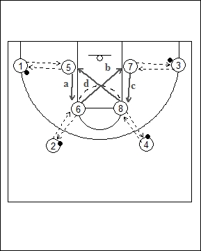

Catégorie : PASSES (Pas-014)
Déroulement
- Quatre joueurs avec ballons au niveau de la ligne des trois points. Quatre autres joueurs sans ballon autour de la raquette (deux joueurs à la baseline et deux autres aux extrémités de la ligne des lancers-francs).
- 1 passe à 5 qui lui remet le ballon avant de se déplacer vers la ligne des lancers-francs (a). 2 passe à 6 qui lui remet et traverse la raquette vers la baseline (b). 3 passe à 7 qui lui repasse le ballon avant de monter à la ligne des lancers-francs (c). Enfin, 4 donne à 8 qui lui rend le ballon avant de traverser la raquette vers la baseline (d). Le drill continue jusqu’au moment où chaque joueur revient à sa position de départ.
- On inverse alors les rôles (1, 2, 3 et 4 à la raquette; 5, 6, 7 et 8 avec ballons à la ligne des trois points).
Coaching points
- On peut demander aux joueurs d’exécuter deux, trois, … cycles complets avant d’inverser les rôles.
- On peut adapter l’exercice en fonction du nombre de joueurs (par exemple, avec cinq joueurs deux joueurs se déplacent en triangle et les trois autres effectuent les passes extérieures).